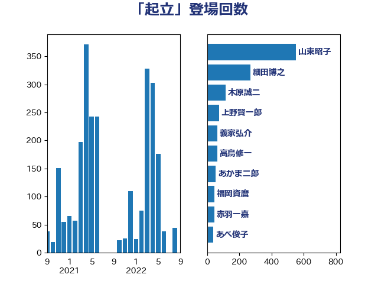

単語「起立」

| 山東昭子 | 自由民主党 | 551 回 |
| 細田博之 | 自由民主党 | 269 回 |
| 木原誠二 | 自由民主党 | 114 回 |
| 上野賢一郎 | 自由民主党 | 74 回 |
| 義家弘介 | 自由民主党 | 63 回 |
| 高鳥修一 | 自由民主党 | 63 回 |
| あかま二郎 | 自由民主党 | 54 回 |
| 福岡資麿 | 自由民主党 | 46 回 |
| 赤羽一嘉 | 公明党 | 45 回 |
| あべ俊子 | 自由民主党 | 39 回 |
| 平口洋 | 自由民主党 | 39 回 |
| 橋本岳 | 自由民主党 | 36 回 |
| 城内実 | 自由民主党 | 35 回 |
| 薗浦健太郎 | 自由民主党 | 35 回 |
| 鈴木馨祐 | 自由民主党 | 33 回 |
| 森屋宏 | 自由民主党 | 30 回 |
| 根本匠 | 自由民主党 | 29 回 |
| 中根一幸 | 自由民主党 | 27 回 |
| 石原宏高 | 自由民主党 | 27 回 |
| 越智隆雄 | 自由民主党 | 27 回 |
| 金子恭之 | 自由民主党 | 26 回 |
| 金田勝年 | 自由民主党 | 21 回 |
| 古屋範子 | 公明党 | 18 回 |
| 大塚拓 | 自由民主党 | 18 回 |
| 小里泰弘 | 自由民主党 | 17 回 |
| 永岡桂子 | 自由民主党 | 15 回 |
| 関芳弘 | 自由民主党 | 15 回 |
| 馬淵澄夫 | 立憲民主党 | 15 回 |
| 山本順三 | 自由民主党 | 14 回 |
| 野村哲郎 | 自由民主党 | 14 回 |
| 松村祥史 | 自由民主党 | 10 回 |
| 伊東良孝 | 自由民主党 | 9 回 |
| 山口俊一 | 自由民主党 | 9 回 |
| 森英介 | 自由民主党 | 9 回 |
| 浜田靖一 | 自由民主党 | 9 回 |
| 若宮健嗣 | 自由民主党 | 9 回 |
| 阿部知子 | 立憲民主党 | 9 回 |
| 伊藤忠彦 | 自由民主党 | 8 回 |
| 佐々木さやか | 公明党 | 6 回 |
| 原口一博 | 立憲民主党 | 6 回 |
| 山谷えり子 | 自由民主党 | 6 回 |
| 松島みどり | 自由民主党 | 6 回 |
| 石田真敏 | 自由民主党 | 6 回 |
| 豊田俊郎 | 自由民主党 | 6 回 |
| 高木毅 | 自由民主党 | 6 回 |
| 尾辻秀久 | 無所属 | 5 回 |
| 上月良祐 | 自由民主党 | 4 回 |
| 佐藤信秋 | 自由民主党 | 4 回 |
| 佐藤勉 | 自由民主党 | 3 回 |
| 吉野正芳 | 自由民主党 | 3 回 |
| 丸川珠代 | 自由民主党 | 2 回 |
| 古川禎久 | 自由民主党 | 2 回 |
| 大塚耕平 | 国民民主党 | 2 回 |
| 新妻秀規 | 公明党 | 2 回 |
| 早坂敦 | 日本維新の会 | 2 回 |
| 末松信介 | 自由民主党 | 2 回 |
| 杉尾秀哉 | 立憲民主党 | 2 回 |
| 松下新平 | 自由民主党 | 2 回 |
| 林芳正 | 自由民主党 | 2 回 |
| 舟山康江 | 国民民主党 | 2 回 |
| 長峯誠 | 自由民主党 | 2 回 |
| 長島昭久 | 自由民主党 | 2 回 |
| 青木一彦 | 自由民主党 | 2 回 |
| 中曽根康隆 | 自由民主党 | 1 回 |
| 斎藤アレックス | 国民民主党 | 1 回 |
| 浜田聡 | NHK党 | 1 回 |